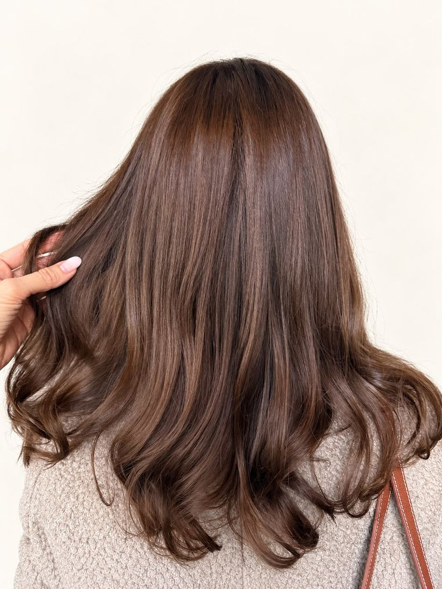
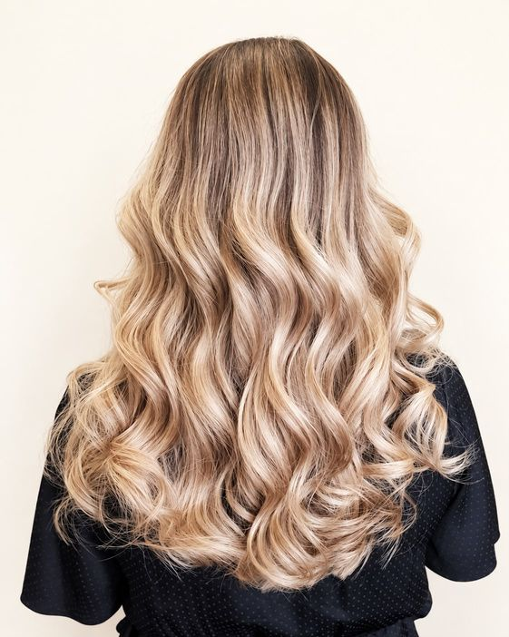
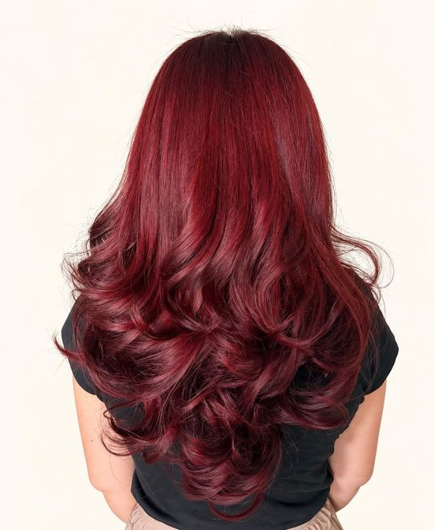
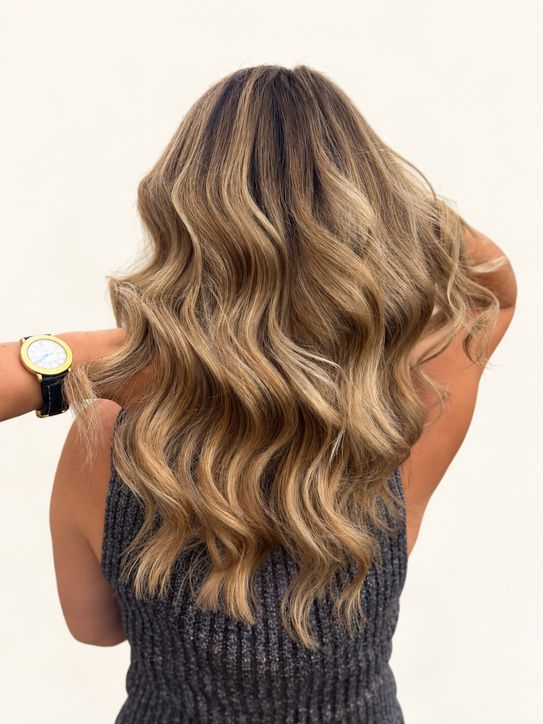

Colorare organică
Colorare permanentă fără amoniac, cu ingrediente de origine naturală și organică certificată.
La Alina Cotta Beauty Lounge, îmbinăm frumusețea cu grija pentru sănătatea părului tău, prin colorare organică fără amoniac și servicii personalizate, pentru un rezultat care te reprezintă și de care să te bucuri pe termen lung.
Peste 15 ani de experiență în hairstyling


Înainte de orice transformare, vrem să te cunoaștem.
În cadrul consultației inițiale gratuite, analizăm nevoile părului tău, discutăm despre culoarea și tunsoarea care ți se potrivesc și construim împreună o soluție adaptată stilului tău de viață.
Scopul nostru este să pleci nu doar cu un look frumos, ci cu unul în care te regăsești.
Alegem împreună un moment în care să discutăm despre schimbarea pe care ți-o dorești.
Evaluăm starea actuală a părului, istoricul colorărilor și rezultatul pe care vrei să îl obții.
Alegem tehnica, nuanța, etapele transformării și stabilim transparent bugetul.
Realizăm serviciul ales, cu atenție la aspectul și nevoile părului, și îți recomandăm cum să îți menții rezultatul.
Fiecare femeie vine în salon cu o poveste diferită a părului ei. Unele își doresc să acopere firele albe, altele visează la o nuanță nouă sau vor să redea părului un aspect luminos și îngrijit.
Descoperă transformările realizate la Alina Cotta Beauty Lounge și imaginează-ți ce am putea obține împreună pentru părul tău.
Lucrăm cu NATULIQUE, un sistem profesional de colorare permanentă fără amoniac, cu ingrediente de origine naturală și organică certificată.
Fiecare serviciu este adaptat stilului și nevoilor tale, iar detaliile se stabilesc împreună, la consultație.

Colorare permanentă fără amoniac, cu ingrediente de origine naturală și organică certificată.

Reflexii luminoase, profunzime și nuanțe care îți pun în valoare frumusețea naturală.

Îți explicăm de la început ce este posibil și în câte etape ajungem la culoarea dorită.

Culoare uniformă și de durată, cu o tehnică aleasă în funcție de starea părului tău.
Da. NATULIQUE este un sistem de colorare permanentă, conceput inclusiv pentru acoperirea firelor albe.
Nuanța și gradul de acoperire depind de proporția firelor albe, de structura părului și de formula aleasă. În cadrul consultației stabilim ce rezultat putem obține.
Da. Spre deosebire de o vopsea vegetală, NATULIQUE folosește un proces de colorare oxidativă, prin care pigmenții se formează în interiorul firului de păr. Putem obține o gamă variată de nuanțe permanente și schimbări de culoare, în funcție de caracteristicile și istoricul părului.
Dacă îți dorești o schimbare care nu poate fi realizată într-o singură ședință, îți explicăm de la început ce este posibil și care sunt pașii necesari.
Prețul final depinde de lungimea și densitatea părului, de cantitatea de produs necesară și de serviciile efectuate.
De aceea stabilim bugetul transparent în cadrul consultației gratuite, împreună cu planul personalizat — astfel încât să poți lua o decizie în cunoștință de cauză, înainte de orice procedură.
Hai să descoperim împreună ce i se potrivește părului tău.
Te așteptăm la Alina Cotta Beauty Lounge, într-un spațiu intim, în care fiecare clientă beneficiază de atenție deplină și de timp dedicat.
Adresă
Str. Mărăști 35, ap. 2, București, România 011463